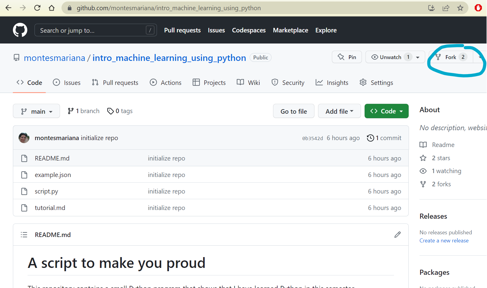

import reMore on regular expressions
regex
basics
A deeper dive into regular expressions.
Today we learn a bit more about regular expressions:
- How to use them in Python
- Basic and not so basic techniques
What to do during the class
Copy the code from the slides in a Jupyter Notebook. You can also experiment with some other string you make up!
Important
Do not forget to import the re package!
Final exercise
For your final project, you will have to add validation in you code, so that you make sure that users are providing what you expect them to (even if the only user would be yourself). Try to think what kind of character data your project will use and how you can validate its format with regular expressions. For example:
- Validate an email.
- Validate a date in one or more formats.
- Validate a home address.
You can also use regex groups to extract information from a fragment of text. For example, try to write regexes to:
- Extract username and domain from the email.
- Extract given name and last name from a name.
- Extract day, month and year from a date.
Finally, you could write a template message in which you replace certain values with another string of text. We have been doing this with f"...{}...", but you could also use re.sub() or re.Pattern.expand() to replace a text.
Git
The final project can be submitted via GitHub. If you so choose, you can send a folder via e-mail, but via Git you can start working on your project already and get feedback as you work on it during May.
We’ll look into Git next week, but in the meantime:
- Download git.
- Create a GitHub account.
- Go to the sample repository and fork it by clicking on the “Fork” button shown in Figure 1. This will create a linked copy in your own GitHub account.

Next you can configure your Git to talk to GitHub. Given your name <name> (this doesn’t have to be your username, just a way to sign your messages; mine is “Mariana Montes”) and the e-mail connected to that account <email>, open Git Bash or another terminal and run the following:
git config --global user.name "<name>"
git config --global user.email "<email>"For example, I would do the following:
git config --global user.name "Mariana Montes"
git config --global user.email "mariana.montes@kuleuven.be"The next steps we will look at next week, but you can already try them already. You also have to run them on Git Bash or another terminal.
- Download your forked repository with
git clone <url>, replacing<url>with the url of your forked repository. This will look something likehttps://github.com/montesmariana/intro_machine_learning_using_python.git, but with your username instead ofmontesmariana.- If you do
git clone https://github.com/montesmariana/intro_machine_learning_using_python.gityou will be downloading MY version of the repository.
- If you do
It can be that Git asks you to authenticate. Follow the instructions of the messages in the console.
- Type
cd intro_machine_learning_using_python. You are now inside the folder and you can see the list of files withls.
After these steps you will have a folder called “intro_machine_learning_using_python” with the contents of the repository. You can go ahead and open it with VS Code (either navigating from VS code or by typing code .).
The idea is that the contents of this repository are the base of your final project. You should edit the README to adapt to your own program, rename/replace script.py with your own script, add a tutorial as tutorial.md… Just to test this out, you can try the following steps.
- With VS Code or some other editor, modify the README so that
- it has your name instead of mine
- it shows how to clone your repository instead of mine (replace
git clone git@github.com:montesmariana/intro_machine_learning_using_pythonwithgit clone https://github.com:<username>/intro_machine_learning_using_python, with your own username).
- In the console from which you cloned the repository (from inside the folder itself), type the following:
git add .
git commit -m "Updated README.md"
git pushAgain, if Git asks you to authenticate, follow its instructions. If everything was successful, when you go to the website of your repository you should be able to see the changes in the README.md
We’ll look into these commands next week. If you still have energies to go a bit further, you can create a pull request! You will see that GitHub says that you are “one commit ahead of…” referring to my repository, so you are invited to contribute. Click on “contribute”, but select the branch in your name instead of “main”.
I will get a message about your request and will be able to make comments.
Don’t worry if any of this doesn’t immediately work! Bring your questions next week, we’ll see all about it :)